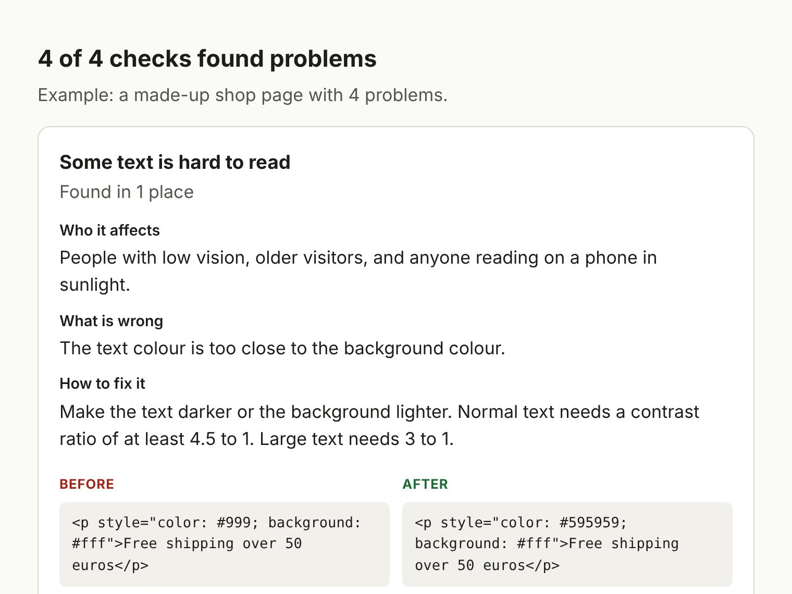

fixmysite
Paste in a web address and it tells you what makes the page hard to use for people with disabilities, in plain words, with a before and after fix for each problem. Built for small online shops, which have to be accessible under EU law since June 2025.
Node.js, Express, Playwright, axe-core, Docker